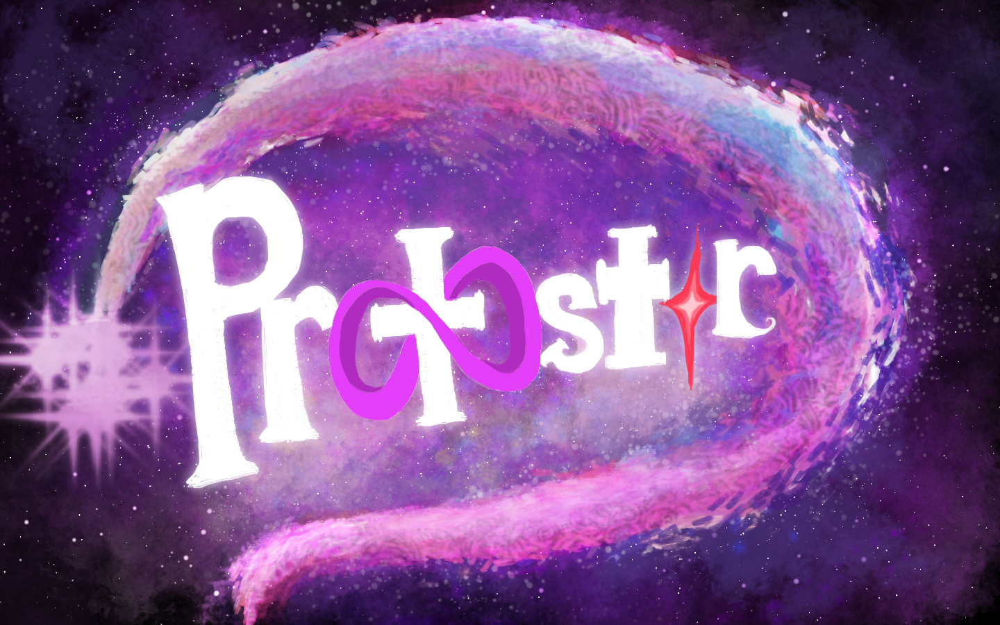

SimAcademy UI/UX Design Intern
Sole designer for a clinical simulation platform that helps medical students practice critical care decision making. Designed the live simulation screen for desktop and mobile, plus the learner dashboard.
Sole designer for a clinical simulation platform that helps medical students practice critical care decision making. Designed the live simulation screen for desktop and mobile, plus the learner dashboard.

A 3D puzzle-platformer created for the UT Austin 3D Games Capstone, featuring gravity-shifting movement, atmospheric storytelling, and surreal environments.
Another project will be added here later.